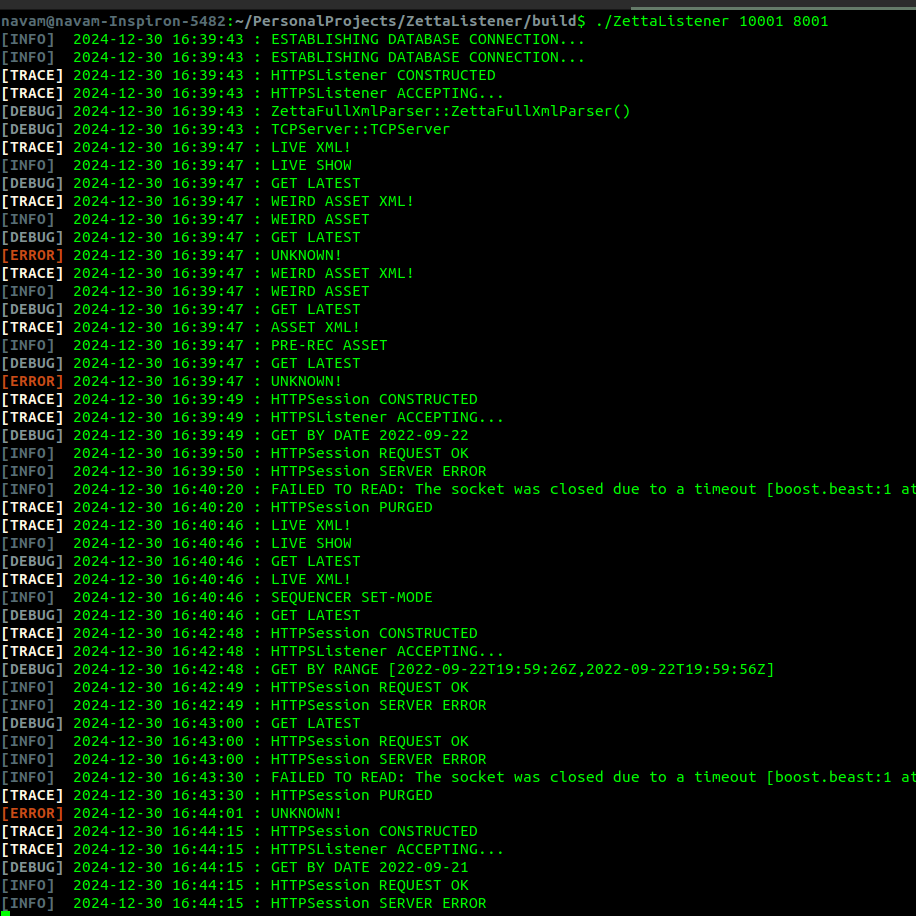

An interactive map of COVID cases vs average income across Toronto neighbourhoods.
A dashboard to visualize trends in the annual Sunshine list across Ontario's
Universities and Colleges.
An interactive tool to visualize emergent behavior of flocking

A Debian daemon for recieving real-time updates from RCS Zetta with persistent
storage and web-server
A draft for Canadian Association of Journalists on COVID prevalence among minority
groups
Estimating the value of π using Monte-Carlo Simulations
Visualizing London, Ontario's music scene using data collected from the Spotify API.
Near real-time visualization of SARS-CoV-2 (hCoV-19) genomic variation with GISAID
data
A MacOS daemon for encoding input audio as MP3 or AAC stream to an IceCast server
An interactive web-interface for the classic Conway's Game of Life
A MacOS daemon for recieving real-time alerts. Compliant with Common Alerting
Protocol (Canadian Profile).
Sorting algorithms visualized
A scatter plot of the number of vaccine exemptions in Toronto's public schools in the
backdrop of COVID cases per neighbourhood.